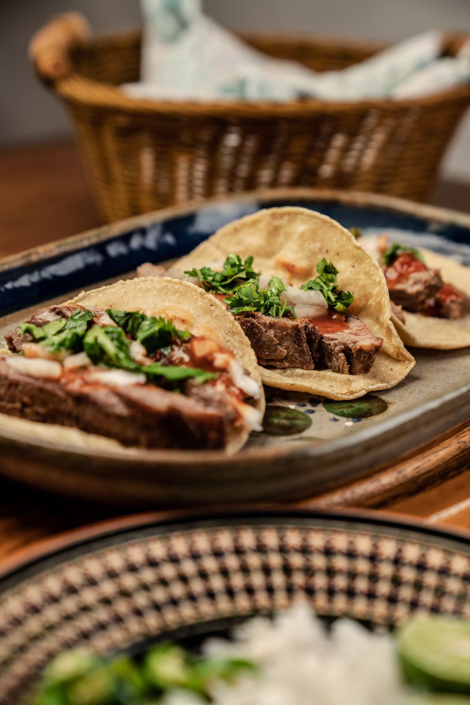

Food truck · Eastex Freeway
Birria tacos, ramen, and quesatacos from a truck on Eastex Freeway — 4.7 stars from 319 Google reviews.
4.7 on Google · 319 reviews
Birrieria y Taqueria Houston is a Mexican food truck listed at 14029 Eastex Freeway, Houston, TX 77032, just south of Humble. Reviewers mention outdoor seating, quick service, and a location in front of an auto body shop.
Restaurant Guru and Restaurantji have listed the truck as temporarily closed, and later Google reviews asked whether it had moved. Call before you make the trip.

14029 Eastex Fwy
Houston, TX 77032
Phone: (346) 600-3937
Hours vary by source, and some reviews say the posted times were not always accurate. Call to confirm before you go.
A single official schedule could not be confirmed from public listings.
Quoted from Google reviews. First names only.
“BOMB AF! Omg ! I ahead the ramen Birria and a steak taco ! Changed my life . Sooooo good!”
“Let's just say me and my son are always looking for the next best spot for tacos here in Houston and this place is freaking amazing, delicious, and hands down the best Keto Tacos and birria tacos we have had. It was so good we are going back to try their other menu options. Oooh and the Horchata wow delicious as well.”
“Absolutely incredible! We got burritos with carnitas, highly recommend. The salsa that comes with it is packing heat! I loved the green and my husband loved the red. Triple 5 stars. Eat here! Give the parking lot cat some love.”
“Very good food, delicious. We ordered a grande birria burrito, birria quesadilla, and birria taco plate. Our favorite was the birria quesadilla. The birria was tender and flavorful.”